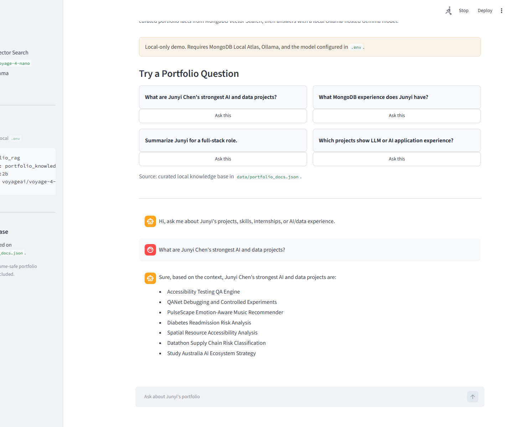
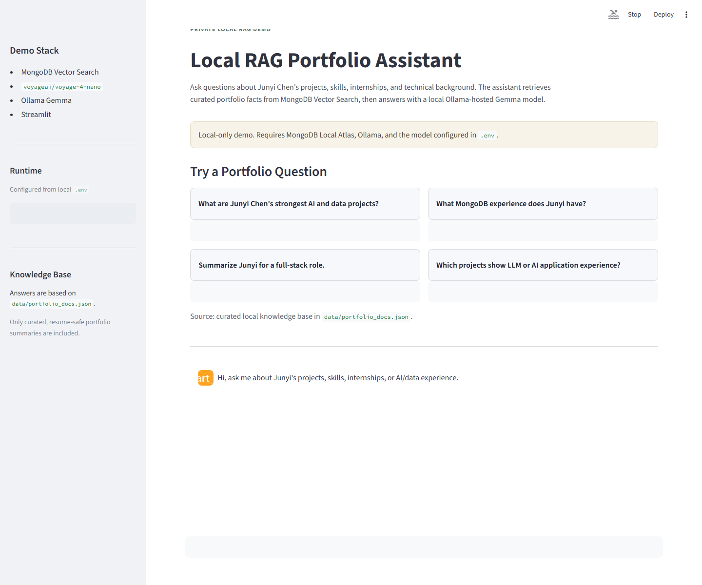

Curated portfolio data
Resume-safe facts live in data/portfolio_docs.json, not in private folders or certificates.
Fully local RAG portfolio demo
This project turns a Google and MongoDB local RAG workshop into a recruiter-friendly portfolio assistant. It retrieves curated resume and project facts from MongoDB Vector Search, then answers with a local Ollama-hosted Gemma model.

How it works
Resume-safe facts live in data/portfolio_docs.json, not in private folders or certificates.
voyage-4-nano embeddings are generated locally through SentenceTransformers.
MongoDB Local Atlas stores chunks and retrieves the most relevant portfolio context.
A local Gemma model generates a grounded answer for the Streamlit chat UI.
Demo preview
Vercel hosts this bilingual showcase. The private RAG assistant stays local because it depends on Docker, MongoDB Local Atlas, and Ollama.

Run locally
docker ps
curl http://localhost:11434/api/tags
.\.venv\Scripts\python.exe scripts\ingest.py
.\.venv\Scripts\python.exe scripts\smoke_test.py
.\.venv\Scripts\python.exe -m streamlit run app.py --server.port 8505Built a fully local RAG portfolio assistant using MongoDB Atlas Vector Search, local embeddings, Ollama-hosted Gemma, ingestion scripts, smoke tests, and a Streamlit chat UI.